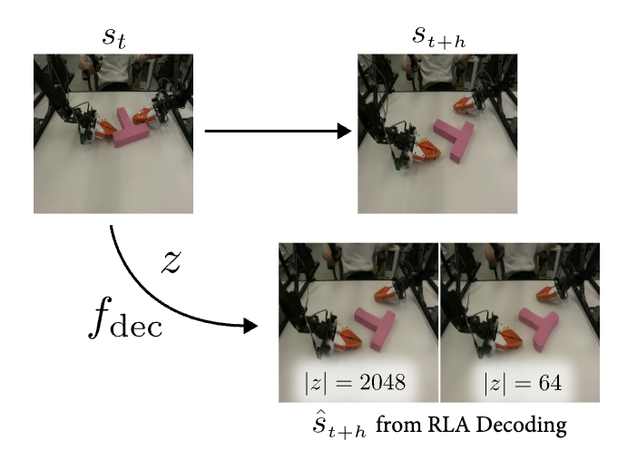
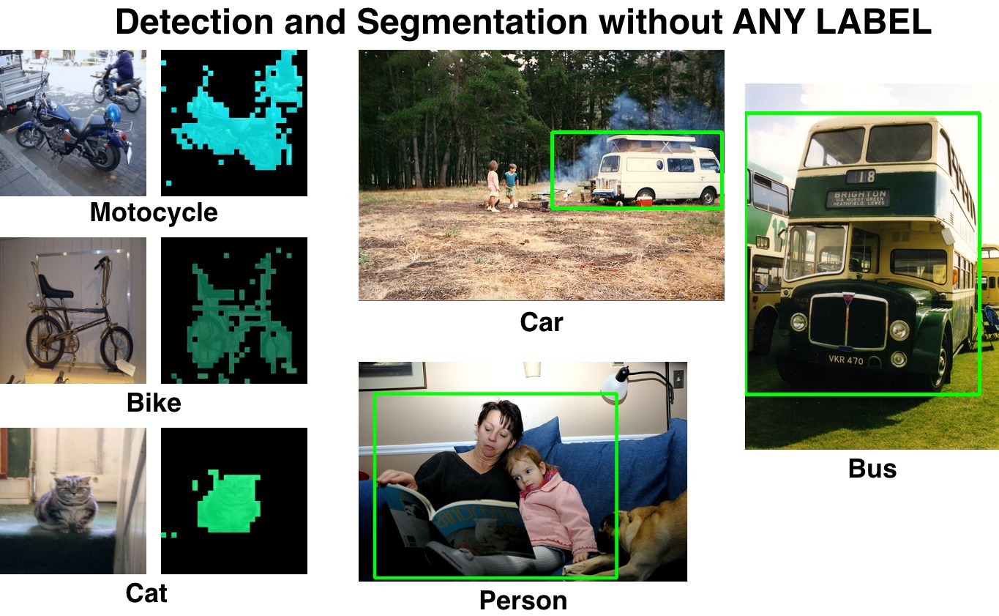
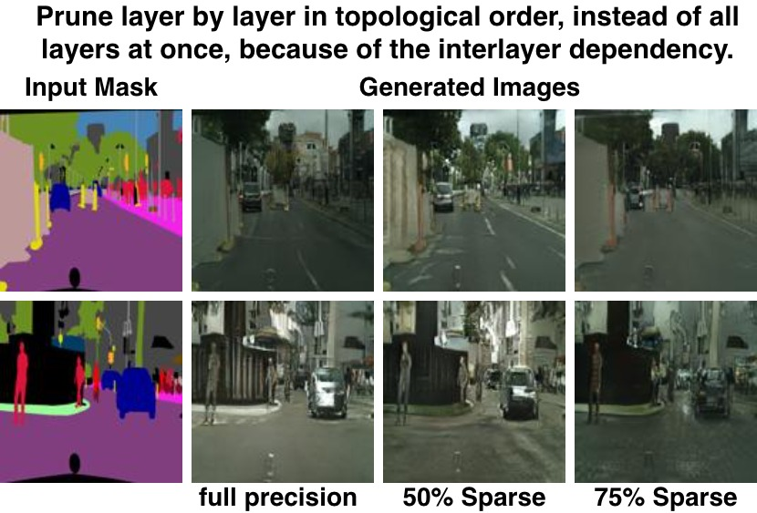
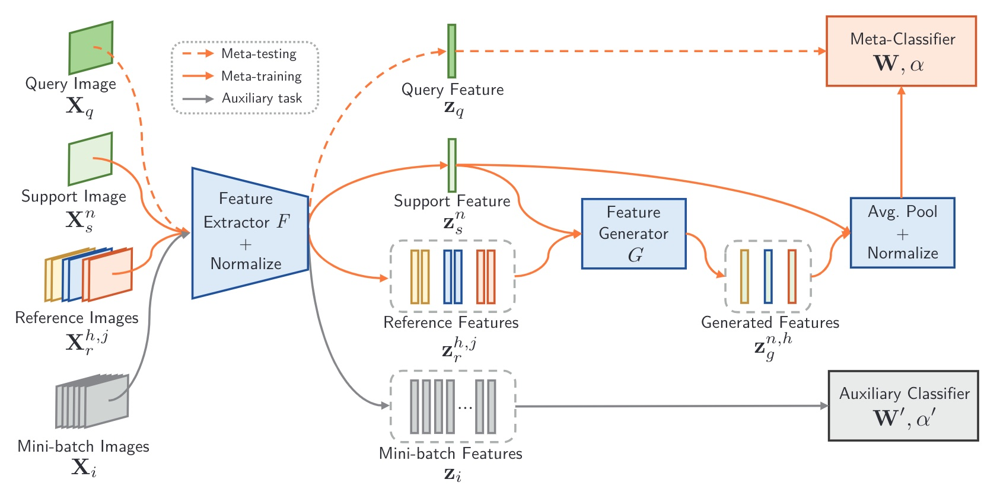

Xinyu Zhang 张鑫语
PhD candidate at Rutgers building robot policies grounded in 2D/3D visual world understanding.
I am a fifth-year PhD candidate in Computer Science at Rutgers University, advised by Prof. Abdeslam Boularias.
Before joining Rutgers, I worked as a machine learning engineer at Microsoft and Face++; most recently, I interned at Meta Reality Lab.
I earned my Master’s at UC San Diego under Prof. Ken Kreutz-Delgado and my Bachelor’s at the University of Science and Technology of China.
Google Scholar · GitHub · CV · xz653 at rutgers dot edu
News
- Glove2Hand accepted to CVPR 2026 (Highlight).
- Motion Blender Gaussian Splatting accepted to CoRL 2025.
- Joined Meta Reality Lab as a research intern.
- Autoregressive Action Sequence Learning accepted to RA-L 2025.
Research
I have published eight independent first-author papers in top-tier robotics and vision venues — CVPR, RSS, RA-L, CoRL, and IROS — spanning robot manipulation policy learning, world modeling, computer vision, 3D reconstruction, and video generation. My focus is bringing 2D/3D world understanding to robotic policy.
Publications
2026

Learning Visual Feature-based World Models via Residual Latent Action
2026 Under Review
2025
Motion Blender Gaussian Splatting for Dynamic Scene Reconstruction
Conference on Robot Learning (CoRL) 2025
Autoregressive Action Sequence Learning for Robotic Manipulation
IEEE Robotics and Automation Letters (RA-L) 2025
TL;DR
- Robot actions as a language — but they are heterogeneous and often continuous.
- We propose a chunking causal transformer to adapt autoregressive models for robot actions.
- A universal architecture that establishes new state of the art on Push-T, ALOHA, and RLBench.
2024
One-Shot Imitation Learning with Invariance Matching for Robotic Manipulation
Robotics: Science and Systems (RSS) 2024
TL;DR
- Bind 3D spatial regions to robot actions, so actions carry semantics.
- Learn to discover these “key regions” and match regions between demonstrations.
- Through region matching, we transfer robot actions to new scenes in one shot.
Detect Everything with Few Examples
Conference on Robot Learning (CoRL) 2024
TL;DR
- Existing work mixes representation learning with detection.
- We don’t learn representations — we focus on how to use existing pretrained ones.
- Detect by propagating ROI regions in the attention map.
Scaling Manipulation Learning with Visual Kinematic Chain Prediction
Conference on Robot Learning (CoRL) 2024
TL;DR
- How to learn a single policy for diverse environments?
- Use a universal, visually grounded, analytically determined action space.
- That is, the visual projection of the robot kinematic structure.
2023

2022

2020
